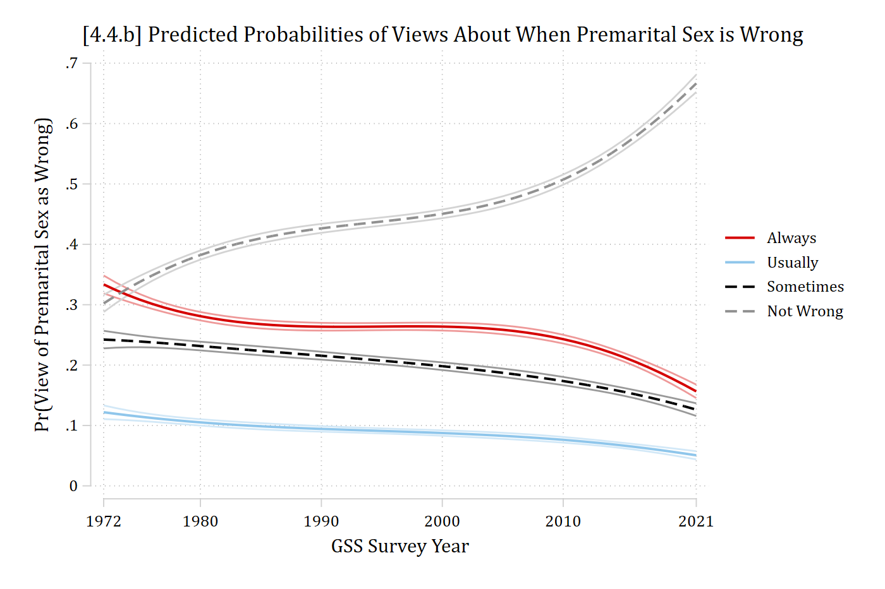
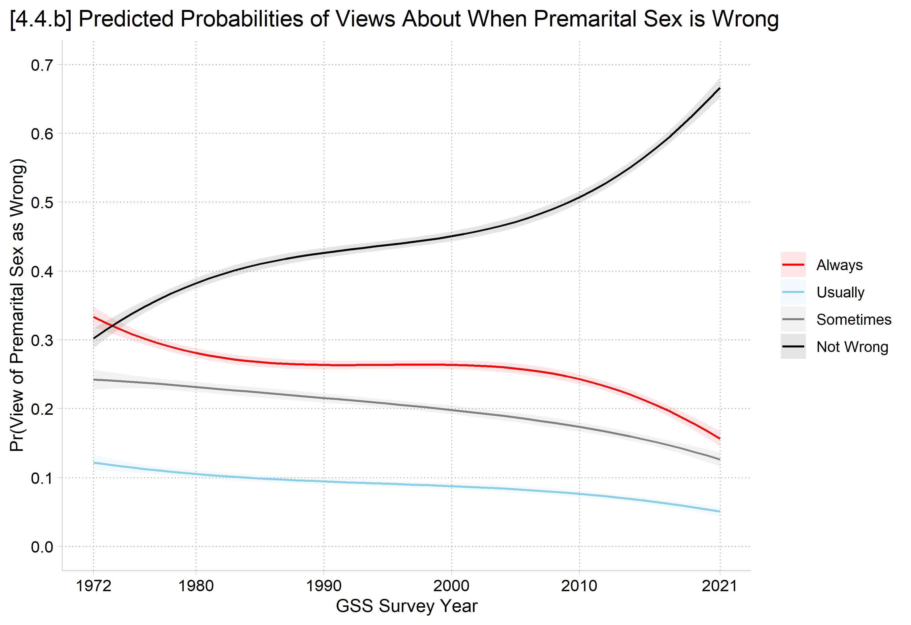
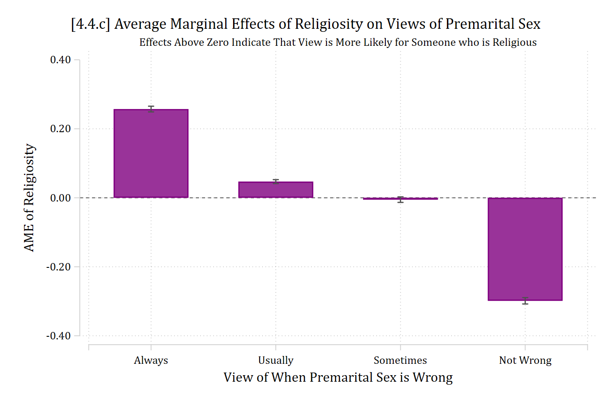

premarsx -- sex before marriage
----------------------------------------------------------------------------
| Freq. Percent Valid Cum.
-------------------------------+--------------------------------------------
Valid 1 always wrong | 10433 25.77 25.77 25.77
2 almost always wrong | 3587 8.86 8.86 34.63
3 wrong only sometimes | 8027 19.83 19.83 54.46
4 not wrong at all | 18439 45.54 45.54 100.00
Total | 40486 100.00 100.00
----------------------------------------------------------------------------
library(haven) # import Stata data and labelslibrary(dplyr) # data manipulationlibrary(sjmisc) # frq() frequency tableslibrary(ggplot2) # graphslibrary(nnet) # multinomial logit: multinom()library(marginaleffects) # predictions and marginal effectslibrary(cleanplots) # graph schemecleanplots_defaults()gss <-read_dta("https://tdmize.github.io/data/data/cda_gss.dta")# Data cleaning: religious attendee = attends about once a month or moregss <- gss |>mutate(religous =case_when(attend <=3~0, attend >=4~1))# Keep model variables; drop any missing datagss <- gss[c("premarsx", "college", "age", "woman", "race3", "year1972", "religous")]gss <- gss[complete.cases(gss), ]frq(gss$premarsx)
sex before marriage (x) <numeric>
# total N=40486 valid N=40486 mean=2.85 sd=1.25
Value | Label | N | Raw % | Valid % | Cum. %
---------------------------------------------------------------
1 | always wrong | 10433 | 25.77 | 25.77 | 25.77
2 | almost always wrong | 3587 | 8.86 | 8.86 | 34.63
3 | wrong only sometimes | 8027 | 19.83 | 19.83 | 54.46
4 | not wrong at all | 18439 | 45.54 | 45.54 | 100.00
5 | other | 0 | 0.00 | 0.00 | 100.00
<NA> | <NA> | 0 | 0.00 | <NA> | <NA>
*Preferred model with year^3quimlogit premarsx c.year1972##c.year1972##c.year1972 /// i.religous i.college c.age i.woman i.race3eststore psmod*4.4.bqui margins, at(year1972=(0(1)49))marginsplot, ylab(0(.1).7) plotop(msym(none) lwid(*1.4)) /// recastci(rline) ciopt(col(*.4)) /// xlab(0"1972" 8"1980" 18"1990" 28"2000" 38"2010" 49"2021") xtitle("GSS Survey Year") ///ytitle("Pr(View of Premarital Sex as Wrong)") ///title("[4.4.b] Predicted Probabilities of Views About When Premarital Sex is Wrong", size(*1.1)) ///legend(order(5 "Always" 6 "Usually" 7 "Sometimes" 8 "Not Wrong"))
Variables that uniquely identify margins: year1972

# Preferred model with year^3. Year is divided by 10 inside the polynomial so# that R computes the standard errors accurately (predictions are the same)psmod <-multinom(premarsx ~poly(I(year1972 /10), 3, raw =TRUE) + religous + college + age + woman + race3, data = gss, trace =FALSE)# 4.4.bplot_predictions(psmod, by =c("year1972", "group"),newdata =datagrid(year1972 =0:49, grid_type ="counterfactual")) +scale_color_manual(values =c("red", "skyblue", "gray50", "black"),labels =c("Always", "Usually", "Sometimes", "Not Wrong")) +scale_fill_manual(values =c("red", "skyblue", "gray50", "black"),labels =c("Always", "Usually", "Sometimes", "Not Wrong")) +scale_x_continuous(breaks =c(0, 8, 18, 28, 38, 49),labels =c("1972", "1980", "1990", "2000", "2010", "2021")) +scale_y_continuous(breaks =seq(0, .7, .1), limits =c(0, .7)) +labs(title ="[4.4.b] Predicted Probabilities of Views About When Premarital Sex is Wrong",x ="GSS Survey Year", y ="Pr(View of Premarital Sex as Wrong)",color =NULL, fill =NULL) +theme(plot.title.position ="plot")

AMEs for effect of time across range
Yet another amount( ) we can specify with mecompare is the range (In R, minmax on avg_comparisons)
This will calculate the effect of a change from the minimum to the maximum of your IV
Here, the total effect that time has had over the measured range of 1972 to 2021
Usually I recommend the trimrange (5th to 95th percentile), but range is OK here as there is an entire GSS sample (n\(\approx\) 2000) at the min and max values
Bonus stats tip: N refers to the whole sample (N = 40,486) while n refers to a subsample. Subscripts are often useful, e.g., n2021=2,399. Statistics like N and n are always italicized.
*AMEs across entire rangeofyearvariablemecompare year1972, amount(range) model(psmod)
Predicting: Pr(premarsx)
Marginal effects (N_psmod=40486)
| ME # Estimate SE P>|z|
---------------------------------+---------------------------------------
year1972(min-max) |
always wrong - psmod | 1 -0.177 0.010 0.000
almost always wrong - psmod | 2 -0.071 0.007 0.000
wrong only sometimes - psmod | 3 -0.116 0.010 0.000
not wrong at all - psmod | 4 0.364 0.011 0.000
# AMEs across entire range of year variableavg_comparisons(psmod, variables =list(year1972 ="minmax"))
Group Estimate Std. Error z Pr(>|z|) S 2.5 % 97.5 %
always wrong -0.1771 0.01027 -17.24 <0.001 218.8 -0.1972 -0.1570
almost always wrong -0.0713 0.00731 -9.75 <0.001 72.2 -0.0856 -0.0570
wrong only sometimes -0.1160 0.00995 -11.65 <0.001 101.8 -0.1355 -0.0965
not wrong at all 0.3644 0.01130 32.25 <0.001 755.6 0.3422 0.3865
Term: year1972
Type: probs
Comparison: Max - Min
From 1972 to 2021, views toward premarital sex have become more accepting. The largest change in opinions of premarital sex have been in the amount of US adults saying it is “not wrong at all.” Specifically, the probability of thinking premarital sex is not wrong at all has increased by about 0.36 over the last 49 years. This change has been offset by decreasing numbers of individuals stating that premarital sex is always wrong (∆ = -0.18), usually wrong (∆ = -0.07), and sometimes wrong (∆ = -0.12).
Interpretation tip: It is easy for readers to get lost with so many MEs. Set the scene with a non-technical takeaway summary sentence first. Then, add specific #s and details.
AMEs for effect of religiosity
Here, “religious” = someone who attends religious services ≥ once a month
qui margins, dydx(religous)marginsplot, recast(bar) ciopts(color(gs5)) /// xlab(0.5 " " 1 "Always" 2 "Usually" 3 "Sometimes" 4 "Not Wrong" 4.5 " ") ///yline(0) plotopts(barw(0.6) color(purple)) ylab(, format(%4.2f)) ///xtitle("View of When Premarital Sex is Wrong") ytitle("AME of Religiosity") ///title("[4.4.c] Average Marginal Effects of Religiosity on Views of Premarital Sex", size(*1.1)) ///subtitle("Effects Above Zero Indicate That View is More Likely for Someone who is Religious", size(small))
Variables that uniquely identify margins:

# 4.4.cme_relig <-avg_comparisons(psmod, variables ="religous")ggplot(me_relig, aes(x = group, y = estimate)) +geom_col(width = .6, fill ="purple") +geom_errorbar(aes(ymin = conf.low, ymax = conf.high), width = .1, color ="gray30") +geom_hline(yintercept =0, linetype ="dashed") +scale_x_discrete(labels =c("Always", "Usually", "Sometimes", "Not Wrong")) +labs(title ="[4.4.c] Average Marginal Effects of Religiosity on Views of Premarital Sex",subtitle ="Effects Above Zero Indicate That View is More Likely for Someone who is Religious",x ="View of When Premarital Sex is Wrong", y ="AME of Religiosity") +theme(plot.title.position ="plot")
*AMEs for binary IVmecompare religous, model(psmod)
Predicting: Pr(premarsx)
Marginal effects (N_psmod=40486)
| ME # Estimate SE P>|z|
---------------------------------+---------------------------------------
religous |
Religious - Not Religiou |
always wrong - psmod | 1 0.257 0.004 0.000
almost always wrong - psmod | 2 0.047 0.003 0.000
wrong only sometimes - psmod | 3 -0.005 0.004 0.186
not wrong at all - psmod | 4 -0.299 0.005 0.000
# AMEs for binary IVme_relig
Group Estimate Std. Error z Pr(>|z|) S 2.5 % 97.5 %
always wrong 0.2573 0.00420 61.26 <0.001 Inf 0.2490 0.2655
almost always wrong 0.0468 0.00292 16.06 <0.001 190.4 0.0411 0.0526
wrong only sometimes -0.0054 0.00409 -1.32 0.186 2.4 -0.0134 0.0026
not wrong at all -0.2987 0.00472 -63.34 <0.001 Inf -0.3079 -0.2895
Term: religous
Type: probs
Comparison: Religious - Not Religious
Religiosity has a polarizing effect on views of premarital sex. Religious individuals are much more likely to view premarital sex as always wrong (ME = 0.257) and somewhat more likely to view it as usually wrong (ME = 0.047). In contrast, they are much less likely to view premarital sex as not wrong at all (ME = -0.299). There are no differences in views of premarital sex as sometimes wrong based on religiosity.
Interpretation tip: It is common for some MEs to be significant and some null. Usually, best to explicitly note null effects on an outcome category.